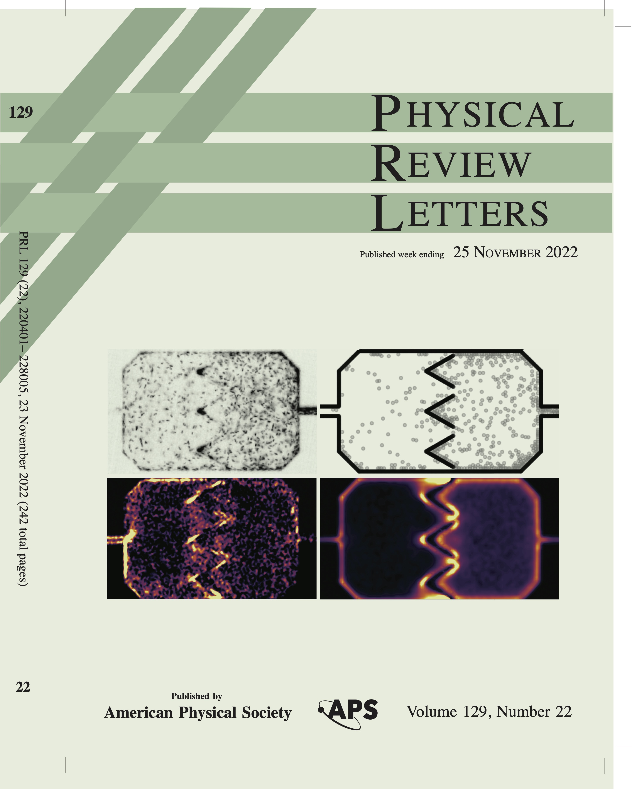
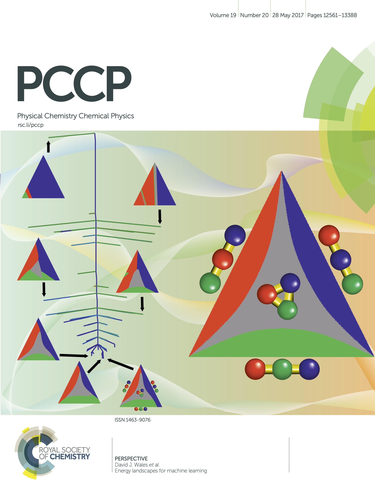
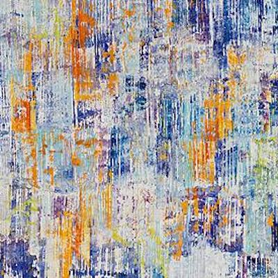
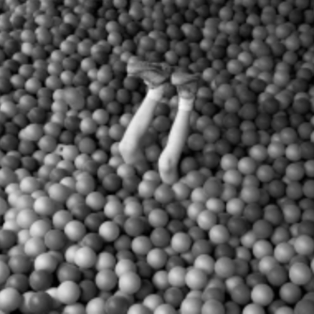
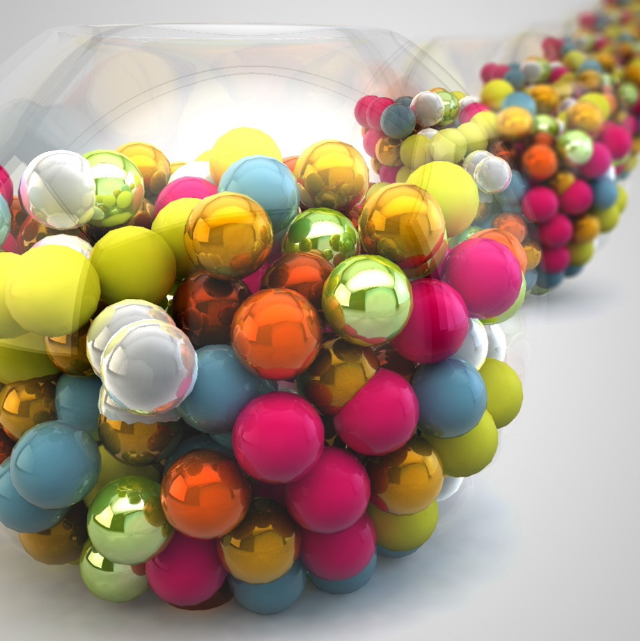
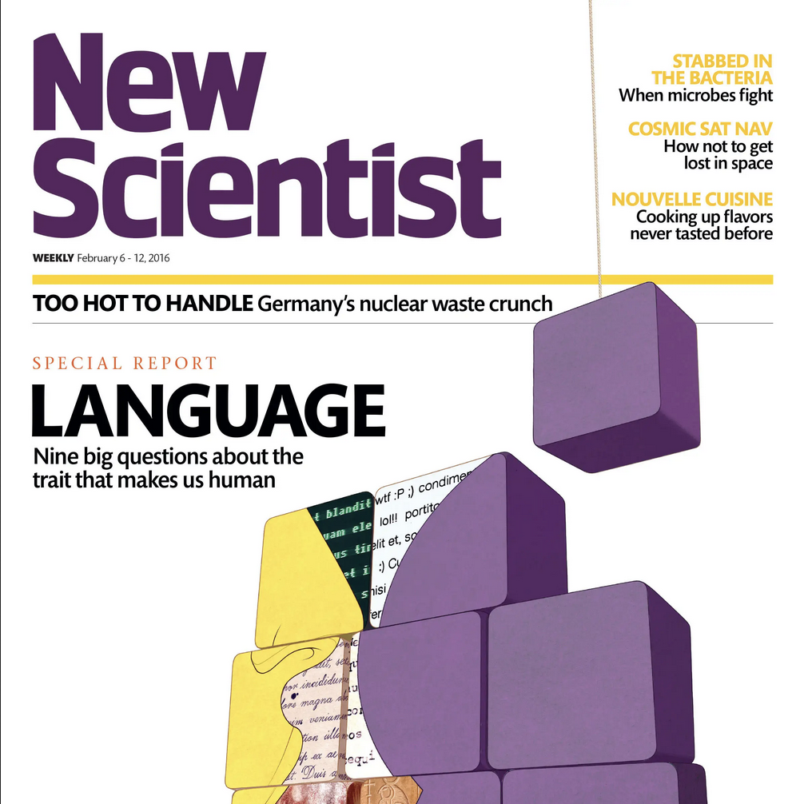

Martiniani
Lab
Menu
Home
About us
Team
News
Publications
Software
Video Gallery
Covers & Press
Funding
Alumni
CV
Let's wander
Covers & Press
Covers

PRL Vol 129 Issue 22

PCCP Vol 19 Issue 20
Editorials, Columns, Viewpoints
Physics
15
, 179 (2022)

Physics Today online (2019)

Nature
546
, 575 (2017)
Physics Today
70
, 9, 20 (2017)
Physics Today online

Nature Materials
15
, 1227 (2016)
Podcasts
"Intelligenza/Italia", Si può fare
From min 20, Radio24 (26/11/2023)
Selected Newspapers & Magazines
Feature in Phys.org (2022)

New Scientist (2016)
The Conversation (2016)
Phys.org (2016)
Tekniikka & Talous (2016)
Scientias.nl (2016)
Phys.org (2016)
ANSA (2016)